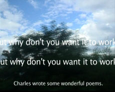

|
UN JOUR OU L'AUTRE NOUS PARTONS TOUS EN VOYAGE EN ITALIE (II) (One day or another we’ll all go on a journey to Italy (II))
Muriel Montini | F 2010 | 58 min.
Material: DV
Format: DVD
Original language: Italian, English, French
Camera: Muriel Montini
Editing: Muriel Montini
Sound: Muriel Montini
Texte: D'Annunzio, Rossellini, Montini With Ingrid Bergman, Georges Sanders, Pierre Merejkovsky
Production: Muriel Montini
Print/Sales: Muriel Montini
www.dimeshow.com
www.magiclanterncinema.com
Double-projection: On one half of the screen "Solus ad Solam", a travelogue by Gabriele D'Annunzio, the symbolist poet. On the other half Roberto Rossellini’s "Voyage in Italy". A machine of fiction is put in motion. The dialogues of Ingrid Bergman and Georges Sanders mingle with the words of the report, the layer's interaction creates an acoustic-hypnotic pull, the departure to a third film. In addition, images of a trip - to Italy? Images of an infinite journey through a landscape continuously and mysteriously renewing and at the same time repeating itself – like love-stories, in cinema.
Muriel Montini studies cinema. She lives and works in Paris.
Films: 2010 A cold place | Un jour ou l’autre nous partons tous en voyage en Italie II | Place de l’Europe (Autour) | 2009| Alice | Adieu mon général | Solus ad Solam | 2008 Vers un pays éloigné | Les jeux d’enfants (UNDERDOX 05) | 2007 Chambres (ou Chagrin) | 2006 Le monde est immense | 2003 Les Etrangères | 1999 Provisoirement et pour la vie | 1997 All along theses lines
back
|